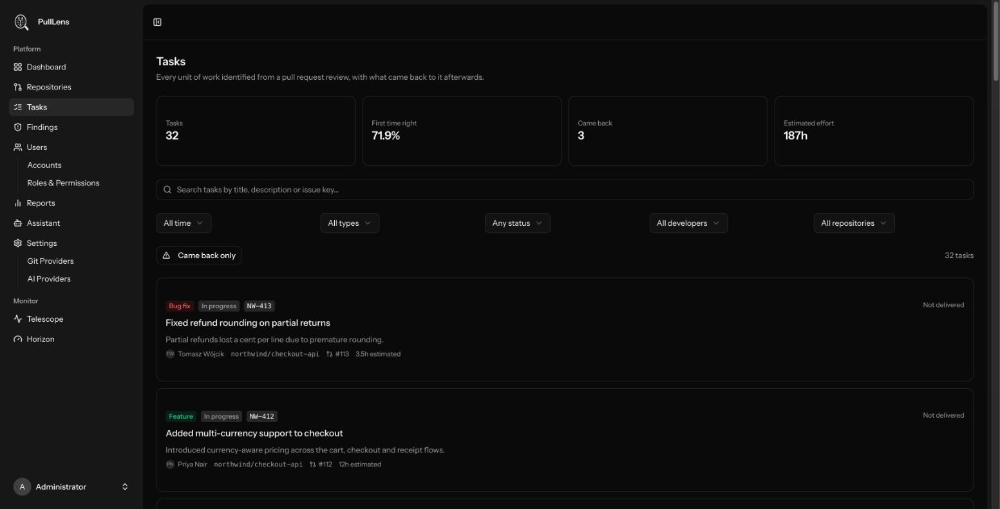

Tasks
Every unit of work PullLens identified, what happened to it afterwards, and how to search the lot.

What a task is
When PullLens reviews a pull request it also works out what that pull request delivered - described the way a developer would on a standup, not as a commit count. A pull request usually yields one or two tasks; one that adds an endpoint and also fixes an unrelated bug yields two.
Extraction happens inside the review that already runs, so tasks cost no extra AI call.
Task types
| Type | Means |
|---|---|
| Feature | New user-visible capability |
| Bug fix | Corrects broken behaviour |
| Refactor | Restructures without changing behaviour |
| Performance | Makes something faster or cheaper |
| Security | Closes or hardens a security gap |
| Tests | Adds or improves test coverage |
| Documentation | Written material rather than code |
| Chore | Build, config, dependencies, formatting |
Lifecycle
Status is derived from evidence, never typed in by anyone - that is what makes it trustworthy. A status somebody has to remember to update is a status that lies.
| Status | Means |
|---|---|
| In progress | Identified on a pull request that has not merged. |
| Delivered | Merged, and nothing has come back to it. This is the "right first time" state. |
| Revised | Later work extended or changed it. |
| Reworked | A later task had to fix a bug in it. |
| Reverted | Later work took it back out. |
When several could apply, the worst one wins - a task both extended and reverted reads as reverted.
How tasks connect
The reviewer is shown recent tasks from the same repository and asked whether the current work acts on any of them. Relationships are directional, and each carries the evidence for why it was drawn.
| Relation | Means |
|---|---|
| Fixes | Repairs a defect in earlier work. This is what marks the original reworked. |
| Extends | Builds on earlier work that was not broken. |
| Reverts | Removes the earlier change. |
| Duplicates | Redoes work already done. |
| Relates to | Connected, but none of the above. |
Each row shows both directions - what it fixes, and what fixed it - with the reason, so an AI-proposed link can be judged rather than taken on trust. A link a person created is marked manual and is never overwritten by a later review.
The four tiles
| Tile | Meaning |
|---|---|
| Tasks | How many match the current filters. |
| First time right | Share that shipped and never came back. Shows a dash rather than 0% when nothing has shipped yet. |
| Came back | How many had to be fixed or reverted. |
| Estimated effort | Summed AI effort estimates. A rough sizing signal, not a timesheet. |
Finding things
| Control | Notes |
|---|---|
| Search | Title, description and issue key. Typing PROJ-451 finds the work for that ticket. |
| Period | Includes This month and Last month as true calendar months. |
| Type / Status / Developer / Repository | Standard filters. |
| Came back only | Just the work that needed fixing - the fastest route to a quality conversation. |
| Click a linked task | Pivots the board to everything related to it. |
Issue tracker keys
PullLens detects keys such as PROJ-451 in branch names, titles and descriptions and stores them against the task. Set TASK_TRACKER and TASK_TRACKER_BASE_URL to turn them into links. Detection is conservative and skips false positives like UTF-8. There is no Jira integration yet - this is the key it will join on when there is.
Tasks are recorded from the moment the feature is deployed; history is not backfilled. The rework signal in particular needs time, because a task is only marked reworked when a future pull request fixes it.